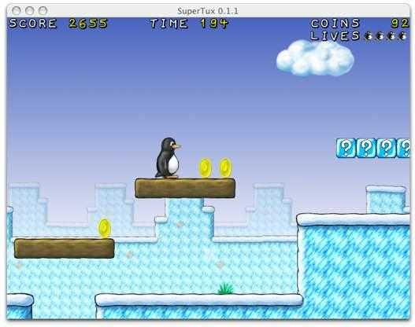

| description: SuperTux is a jump'n'run game with strong inspiration from the Super Mario Bros. games for the various Nintendo platforms. url: https://github.com/SuperTux/supertux license: 'GPL3' depends: sdl2 sdl2_image physfs openal glew boost boost-libs curl libogg libvorbis created_at: Sunday Dec 20, 2015 at 15:38 pushed_at: Sunday Dec 20, 2015 at 16:01 |  |